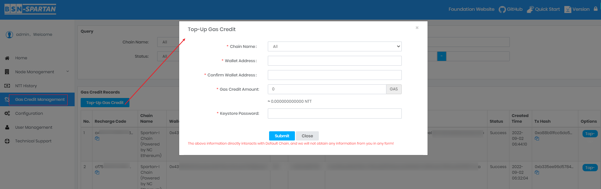
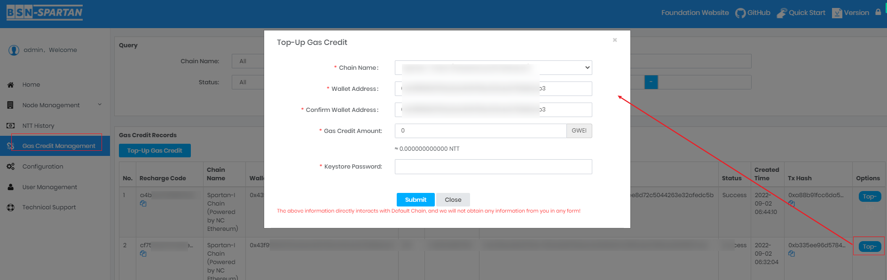
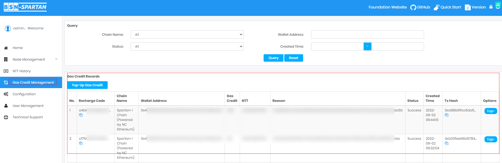
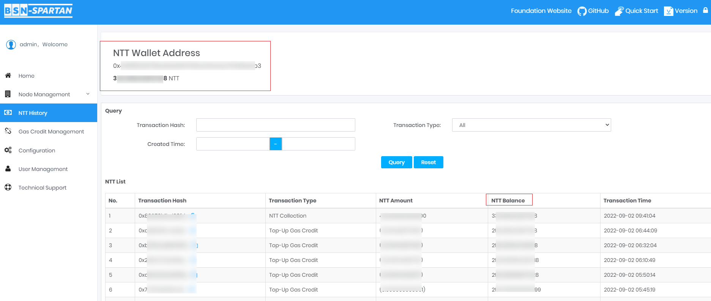

Top-Up Gas Credit
Any Wallet in the Non-Cryptocurrency Public Chains needs to consume Gas Credit when initiating a transaction. For example, if your user want to initiate a transaction, his/her chain Wallet needs to consume Gas Credit. At this time, you can use your NTT balance to Top-up the Gas Credit of this chain Wallet to ensure that the transaction can proceed normally.
Submit the Gas Credit Top-up Transaction (Manually Via Management)
You can Top-up Gas Credit through your management system. Please make sure that the target Wallet is correct, if the target Wallet is incorrect but the transaction is successfully executed, the transaction can not be rolled back.
Operation Steps:
Click on "Gas Credit Management" on the panel to enter the page:


Submit the Gas Credit Top-up Transaction (Call Smart Contract)
If you are very familiar with the use of blockchain and smart contracts, you can also choose to directly call our official smart contract for Gas Credit Top-up. Check the Spartan Gas Credit Governance Contract for details.
Check the Transaction Information
If the Top-up is successful, you will be able to check the transaction in the Top-up list. Otherwise, your NTT balance will be refunded. Since the transaction takes place on the chain, there will be a certain delay for reaching a consensus, please be patient.
Operation Steps:
Click "Gas Credit Management" on the panel to enter the page:

Check the NTT Refund
[!danger|style:flat]
If Top-up Failed.Please make sure your NTT is correctly refunded.
Operation Steps:
Click "Home" on the panel to enter the page, check your NTT Balance.

Or Click the "NTT History" to see the details:
